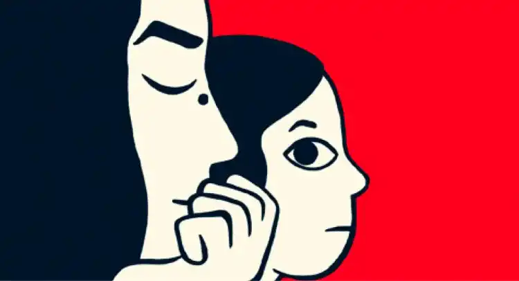
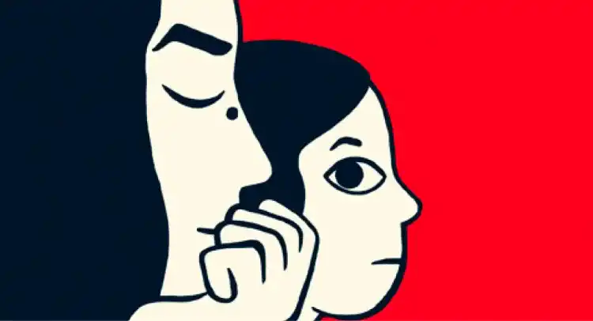

Destins d'Iran
 

« Comment se fait-il que moi, en tant que femme je ne puisse rien éprouver en regardant les messieurs moulés de partout mais qu’eux en tant qu’hommes puissent s’exiter sur mes cinq centimètres de cagoule en moins »